2026.09 — 今
战斗策划
叠纸游戏
- 主角战斗技能设计与实现：在大世界项目中，负责主角战斗技能及辅助道具的机制实现与配置验收，跟进技能逻辑、表现资源及实机效果；参与部分亚种道具的技能机制设计与落地。
实习经历
战斗策划
战斗策划
游戏策划
游戏拆解
游戏核心系统及资源流线拆解
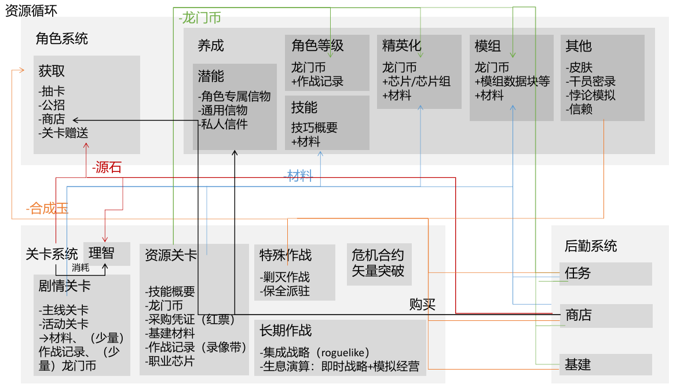
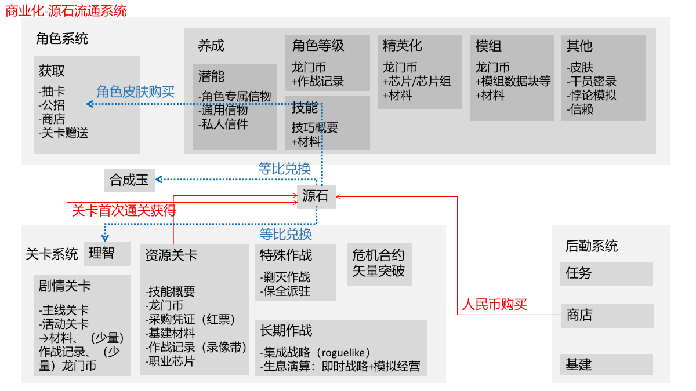
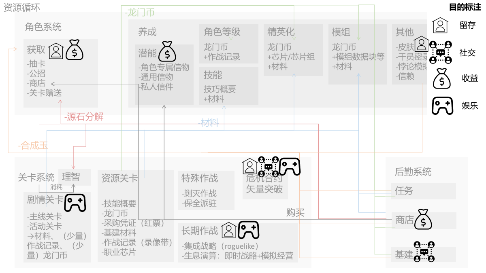
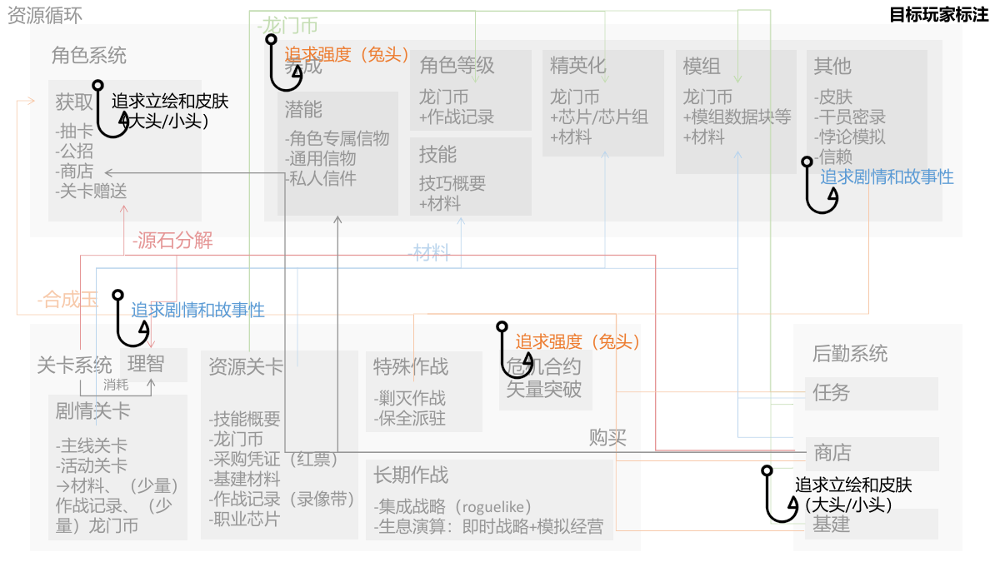
游戏拆解
游戏区域动线规划分析
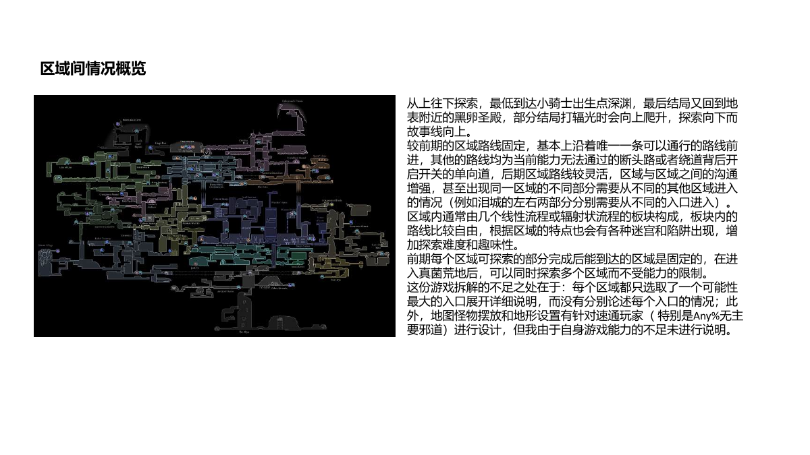
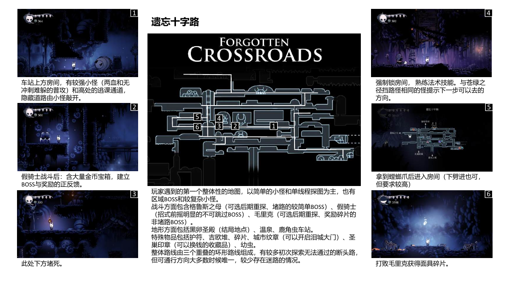
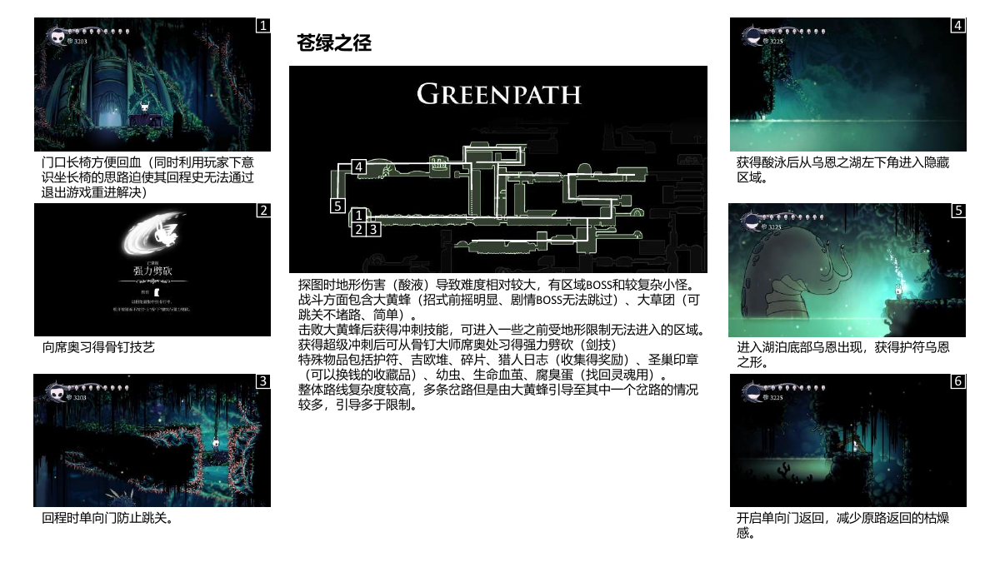
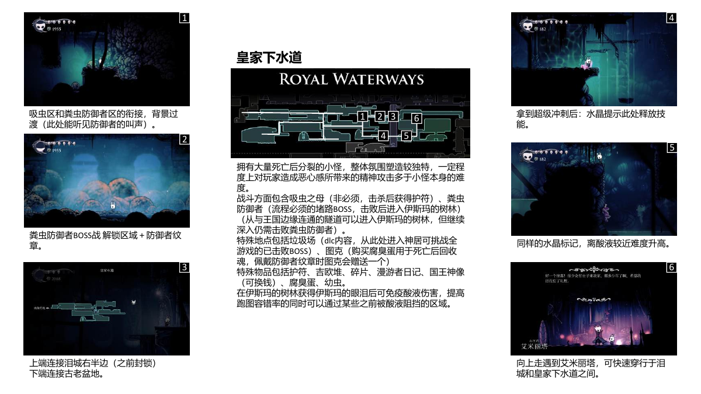
OTHER PROJECTS
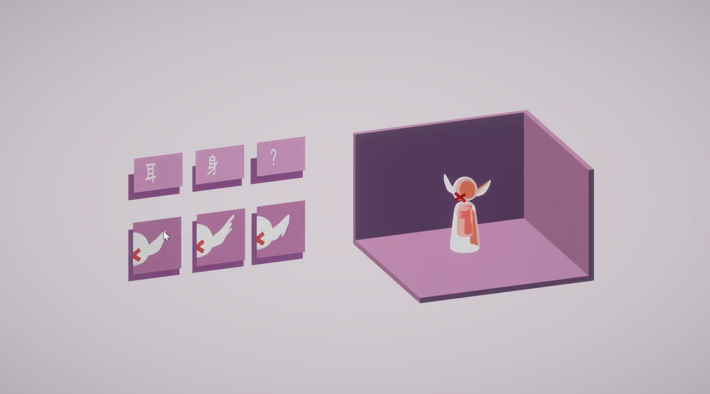
P—01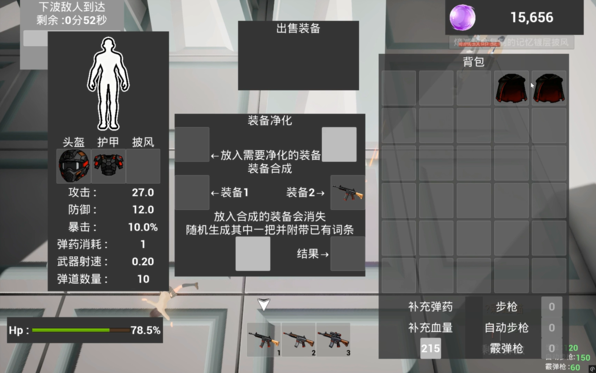
P—02负责跨学科技术团队沟通及软硬件联调，作品入选《生成智造：人工智能赋能学科交融艺术造型数字化教学成果展》。
展览入选担任组长，负责脚本设计、AI 图像 / 视频生成及成片剪辑，成品获第十届“汇创青春”上海大学生文化创意作品展示活动三等奖。
三等奖简历
空洞骑士（350h+，成就 62 / 63） · 丝之歌（145h，成就 34 / 52）
女神异闻录 5 皇家版（300h+，全流程） · 苏丹的游戏（200h+） · 极乐迪斯科（全流程） · 密教模拟器（50h+） · 弹丸论破 1 / 2 / V3（全流程） · 底特律：变人（全流程）
文明 VI（250h+） · 月圆之夜（50h+） · 饥荒
明日方舟（开服至今，全主线通关，干员 90.5%，蚀刻章 53%） · 终末地 · 无限暖暖 · 原神
荒野大镖客 2（50h+） · 尼尔：机械纪元
星露谷物语（200h+） · 动物森友会（100h+） · 东方夜雀食堂（50h+） · 灵魂摆渡人（40h）
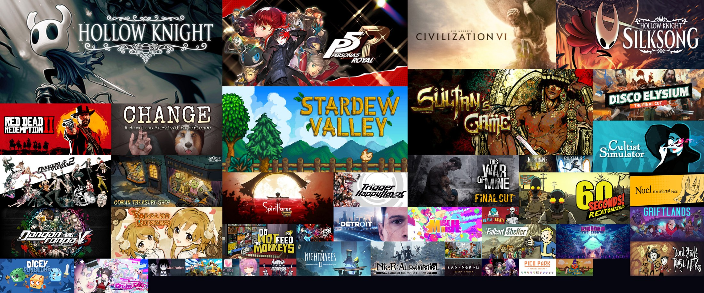
联系